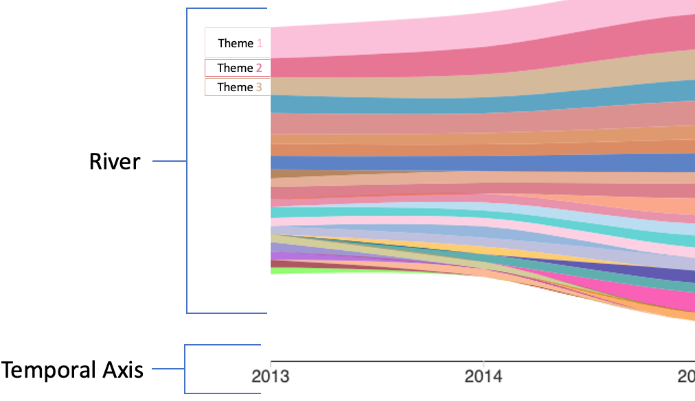
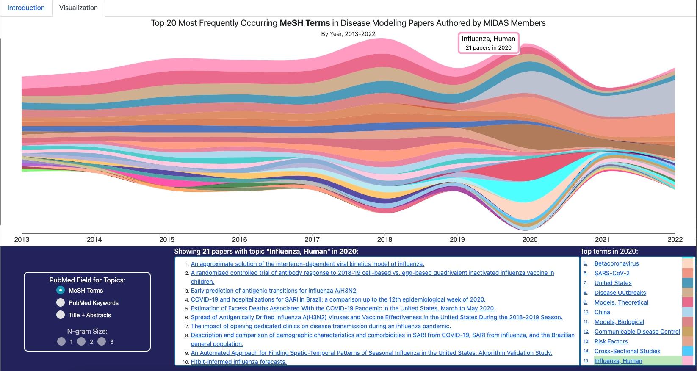

A Theme River is a visualization of thematic variations over time in a set of documents. Documents are grouped into themes based on the terms they contain.
In a Theme River visualization, themes are represented as colored ribbons that flow from left to right. The x-axis represents time, and the y-axis represents the proportion of documents that contain a given theme at a given time. When individual themes are stacked on top of each other, the visualization resembles a river, hence the name.

The MIDAS Theme River is an interactive display that allows users to explore the themes of MIDAS papers over time. Specifically, the display shows the top 20 most frequently occurring topics in infectious disease papers authored by MIDAS members from 2013 to 2022.

The display is composed of four parts:

- Hovering over a theme displays the theme name and the number of papers that contain the theme in the year.
- Clicking on a theme displays a list of papers that contain the theme in the year.

- Field - The field to use for theme extraction. Options are MeSH Terms, Keywords, and Title and Abstract.
- N-gram Size - The size of the n-grams to use for theme extraction. Options are 1, 2, and 3.

- Hovering over a paper displays the paper title and abstract.
- Clicking a paper takes you to the paper on midasnetwork.us.

- Clicking on a Theme will highlight the Theme in the Theme River and load the papers for that Theme in the Papers section.
The MIDAS Coordination Center, through the use of the PubMed API, maintains a curated database of the metadata from infectious-disease related papers published by MIDAS members. Themes are extracted from papers using either the
- MeSH Terms (a list of curated terms from a controlled vocabulary, assigned by PubMed)
- Keywords (an author-provided list of search terms applicable to the paper)
- Paper Title and Abstract
Terms are extracted from the metadata using a custom NLP pipeline. The pipeline, and the script that runs it, are available here: Not yet available, placeholder. The pipeline performs the following steps:
- Stemming - the pipeline reduces words to their root form (e.g. "infectious" becomes infecti")
- Tokenization - the pipeline splits the text into n-grams (word phrases, where n is the size of the phrase specified by the user) and removes punctuation and common words that don't apply to the domain of infectious disease. These n-grams are the themes that are visualized in the river.
- Theme Frequency Calculation - the pipeline counts the number of times each theme occurs in each paper per year.
Absract: